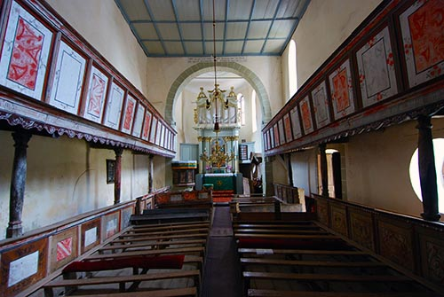

Cetatea Viscri
În Viscri mai dăinuie, bine conservată, una dintre cele mai pitorești și - în pofida dimensiunilor nu prea mari - monumentale cetăți țărănești săsești, ce cuprinde între zidurile sale una dintre puținele biserici-sală romanice ale secolului Biserica evanghelică fortificată din Viscri, comuna Bunești, județul Brașov, a fost construită în secolul XIII pe baza unei vechi bazilici romane datată din secolul al XII-lea. Ansamblul bisericii evanghelice fortificate format din biserică, incinta fortificată, cu drum de apărare, două turnuri, două bastioane, turn de poartă este monument istoric, cod LMI BV-II-a-A-11843. Din anul 1999 biserica face parte din patrimoniul mondial UNESCO. Biserica-sala a fost construita de secui si ulterior a fost preluata de sași. Biserica a fost fortificata in secolul al XV-lea si transformata intr-o biserica fortificata cu turnuri, bastioane si doua ziduri de apărare
Un registru ce cuprinde lista localităţilor din comitatul Rupea, care plăteau impozite episcopatului pomenește, la 1400, Viscri sub numele „ Alba ecclesia”. Acest an este preluat ca atestare documentară a localităţii și a bisericii, deși arheologii au datat în intervalul 1100-1120 podoabele și monedele descoperite în mortmintele de aici. Coloniștii sași, veniţi pe aceste locuri spre sfârșitul secolului XII, au găsit o capelă. Aceasta era construită din calcar de culoare alb-verzuie. Tocmai existenţa capelei a condus către specificitatea construcţiei viitoarei biserici, căci s-a pornit de la planul rectangular al capelei cu tavan plat și cu o absidă semicirculară pe partea dinspre răsărit. Astfel, biserica din Viscri nu respectă planul specific bazilicilor romanice cu trei nave, ci este o biserică-sală.
Din ea s-au conservat părţi de zidărie de la arcul de triumf şi începutul navei. Refacerea gotică a lungit corul, l-a încheiat cu un poligon aproape insesizabil, sprijinit la exterior cu contraforturi. Doar în părţile sale superioare, arcele ascund instalaţii pentru apărare, care s-au construit într-un orizont mai larg de biserici săseşti, în primele decenii ale secolului al XVI-lea. La rândul ei, nava din secolele XII-XIII a fost lungită până la întâlnirea cu vechiul donjon, metamorfozat în clopotniţă. La un moment dat, au existat bolţi pe ogive din cărămidă, din care unele mai pot fi văzute în preajma edificiului. Tavanul actual poate fi legat de o inscripţie din anul 1743. Sacristia pare a fi o adaptare furnizată de un şantier intermediar, dar care nu a mai fost modificată în ultima perioadă medievală.
În prima fază, capela nu a fost extinsă, ci s-a construit pe latura ei vestică o tribună pe arcade semicirculare și coloane cilindrice. În a doua jumătate a secolului XIII se înalţă, la câţiva metri de capelă, un turn din bazalt. Acesta a servit și ca locuinţă conducătorului obștii. Tot atunci se ridică zidul de incintă, ca răspuns la distrugerile suferite în timpul năvălirii tătarilor de la 1241. La sfârșitul secolului XV se reconstruiește capela, însă apar și modificări faţă de planul primei construcţii.
În secolul XVI, în faţa pericolului otoman, fortificarea bisericii continuă. La parter, sala se leagă de turn, iar nivelul al patrulea al meterezului estic este legat de podul bisericii. Latura sud-estică este întărită cu două turnuri și două bastioane. Pe parcursul veacului următor în vestul și în nordul fortificaţiei se adaugă câte un turn, iar un zid nou face legătura dintre acestea. În secolul XVIII se adaugă un al doilea rând de ziduri, dar acesta mai este vizibil doar parţial.
Despre turnul clopotniţă se poate şti că a fost întregit, până la cinci nivele, şi acoperit în ultimele secole de funcţionare ale complexului fortificat. Ultimul nivel a apărut doar la 1823. Este auster şi dotat doar cu ferestre-ambrazuri, iar galeria de sub acoperiş îi accentuează tot rostul militar. Uşa de la intrare a rămas dotată cu feronerie de ocazie, reutilizată probabil în secolele XVI-XVII. Există inscripţii pe structura şarpantei care se leagă de o renovare din anii 1670-1672.